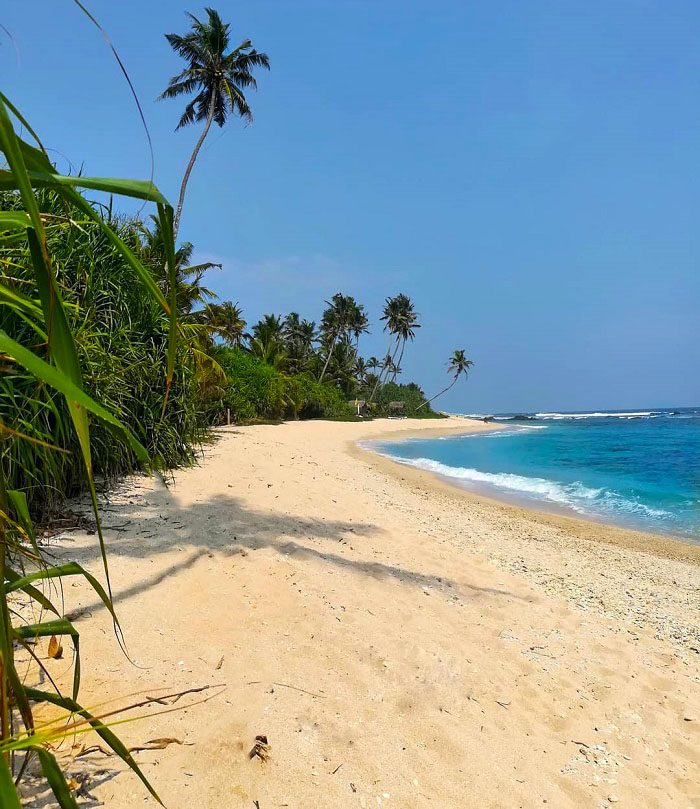

About Polhena Beach

Polhena beach is located not far from the city centre of Matara, the Polhena Beach
offers the perfect atmosphere for a beach getaway, without the crowds of tourists,
making it all the more exclusive to anyone who visits the sandy stretch.
The beach is primarily known to be a place of solitude and peace, so as to induce that
sense of calmness in the minds of the traveller. Even the waters are relatively calmer
than that experienced in Galle and Weligama, because of the corals acting as a fence of
sorts. Although popular as a picnic beach, there are a few water sports that you can
engage in, namely swimming and snorkelling.
There are other interesting elements of the Polhena Beach such as the Nilwala River,
which runs through the entire city of Matara, eventually falling into the sea through
Polhena Beach, which makes it quite a majestic sight.